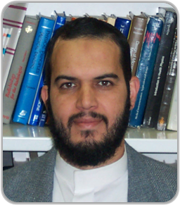
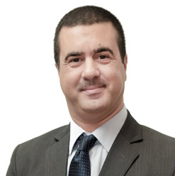

SurgeMedical's History
SurgeMedical was established in 16th January 2015 by a group of Ph.D university professors in the Eastern Province of Saudi Arabia, Al-Dhahran. These professors specialized in medical physics and often took side jobs in providing the services SurgeMedical offers for hospitals and health centers, as the market regarding those services was small, and hospitals needed experienced men to handle the equipment. After many years of odd jobs, the professors' university shut down the Medical Physics program that generated the professor's living and income due to budget cuts. These professor's then decided to establish a company out off the odd jobs they've gotten used to provide, thus SurgeMedical was created.
SurgeMedical is mobile and manual, specialists will be sent to the client's location to inspect, analyze, and fulfill the wishes of the respected client. Each case is fully documentated and stored.
Founders of SurgeMedical: Dr. Nabil Mohammed and Dr. Mourad Mansour
 